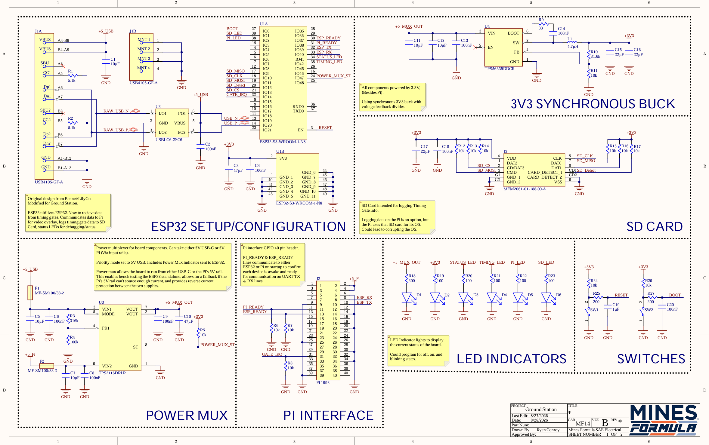
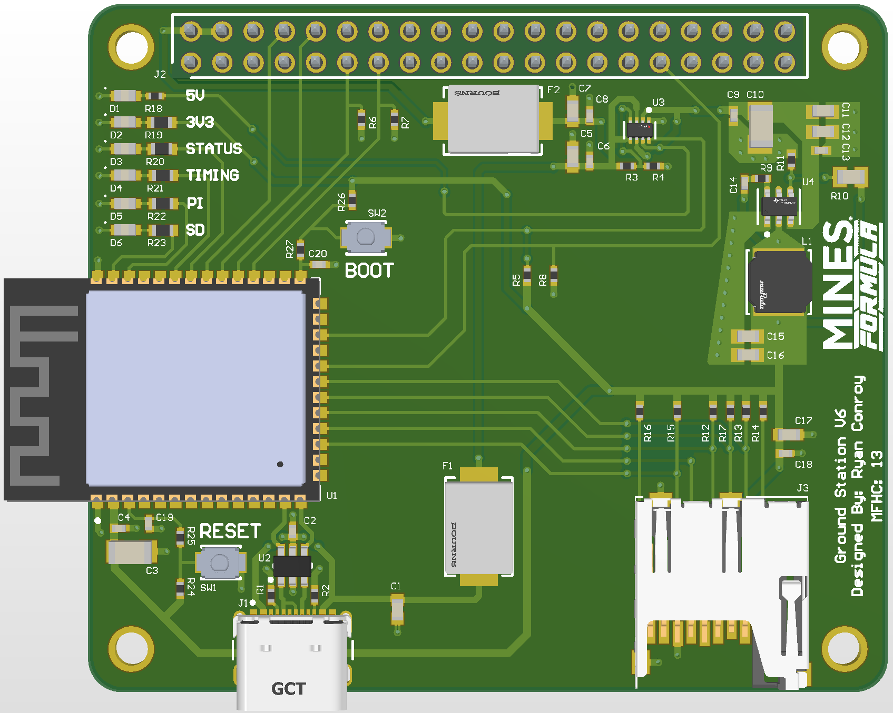

Ground Station V6
The Problem: As the Mines Formula SAE team developed new hardware, it was apparent that existing hardware was becoming outdated. As new data collection methods emerged, such as timing gates, supporting hardware was required. Ground Station V6 builds on its predecessor, while also including support for HDMI display as well as utilizing ESP32-Now for timing gates data. On top of all, Ground Station V6 commits all received data to the cloud.
The Solution: An ESP32-S3-based ground station that receives timing-gate data wirelessly, relays it to a Raspberry Pi 5, and adds HDMI output and cloud logging on top of the previous version.
Breaking it Down:
- ESP32-S3-WROOM-1 receives timing-gate data over ESP-NOW and forwards it to a Raspberry Pi 5 over UART
- TPS56339 buck converter steps 5V down to a 3.3V logic rail
- TPS2116 power mux lets the board run standalone off USB-C for bench testing
- Logs data locally to a microSD card over SPI in addition to relaying it to the Pi

